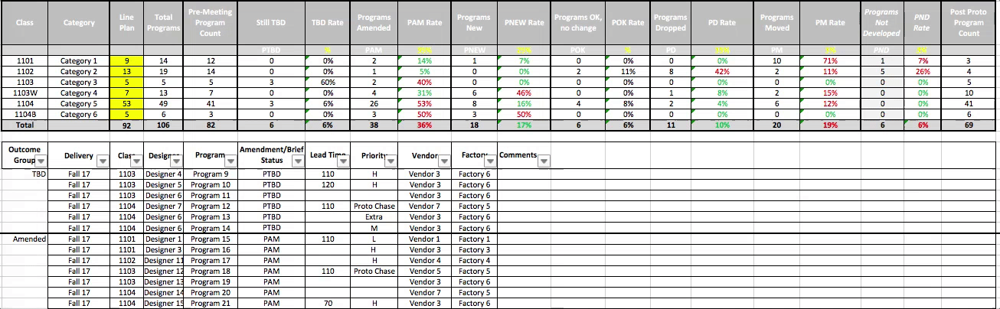
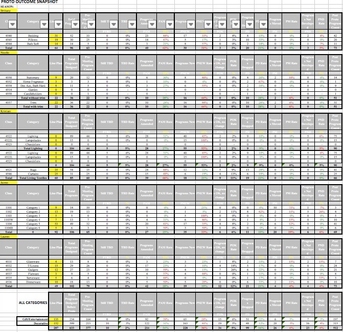

Summary: The Results file is used to summarize the outcome of the two major meetings during the development season-- Proto Results, and Finalization Results.
Using the List Making tab in the WIP file, Program level data is entered and sorted by outcome. The summary chart then totalls the categories by outcome to show if the target adoption rate has been reached, or not. Conditional formatting is used to visually show if a target has been reached.
The Results Totals Tab summarizes each category's seasonal outcome for quick reference.
